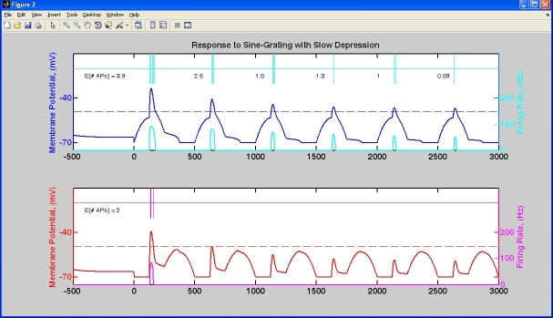

README file for CODE to accompany Carver, et al., PLoS Computational Biology
Steps to plot Figure 2:
1. Start Matlab in CARVER directory. Matlab calls startup.m, setting path.
2. Type "genallplots" to plot Figure 2.
This generates the two subpanels, for example figure 2 B looks like:

Examples running model (after startup.m is called automatically or manually)
out = dirsel; % default parameters, sine grating stimulus, preferred direction
out = dirsel(afferents(20,30)); % 20 depressing, 30 nondepressing afferents
out = dirsel(nonpref); % sine-grating stimulus, non-preffered direction
out = dirsel(pulse); % pulse stimulus, preferred direction
out = dirsel(nonpulse); % pulse stimulus, non-preferred direction
Note that parameters can be combined in any order:
out = dirsel(pulse, afferents(10,30));
out = dirsel(afferents(40,25), nonpulse);
Also note that any parameter defined before the "replace" statement in
dirsel.m can be changed on command line when dirsel is called:
Eg:
out = dirsel('tau_D',100,'tau_S',2000);
out = dirsel('d',0.5,'s',0.98,afferents(20,30),nonpulse);
To view a list of model parameters with default values: execute "type dirsel".
To plot results of any of above simulations:
plot(out.time,out.V) % plots membrane potential (V_infty)
plot(out.time,out.D) % plots state variable D
plot(out.time,out.S) % plots state variable S
plot(out.time,out.F) % plots firing rate F;
P = extracellplot(out.time,find(out.AP)); plot(P{:}) % plots action potentials
To plot an image of the stimulus pass imageflag = 1, e.g.
img = dirsel(pulse,'imageflag',1); image(img)
img = dirsel(nonpref,'imageflag',1); image(img)